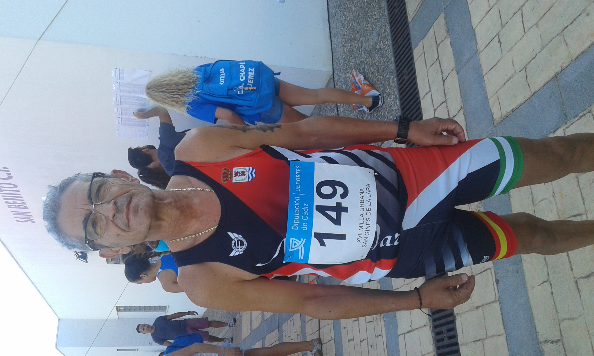

Entrenamiento
Detrás de cada carrera hay muchas horas que no aparecen en una fotografía. Entrenamientos, madrugones, cansancio, días buenos, días difíciles y, sobre todo, constancia.
Durante todos estos años he aprendido que entrenar no significa solamente correr. También significa saber escuchar al cuerpo, tener paciencia y aceptar que cada etapa de la vida necesita una manera diferente de prepararse.
“Cada carrera empieza mucho antes de la línea de salida.”
Los comienzos
Cuando empecé a correr, entrenar formaba parte de descubrir algo nuevo. Poco a poco fui entendiendo que para mejorar había que ser constante y que los resultados no aparecían de un día para otro.
Cada entrenamiento servía para aprender algo. Había días en los que todo salía bien y otros en los que costaba mucho más. Pero precisamente ahí empecé a descubrir el valor de la constancia.
“La constancia fue construyendo mi camino.”
La constancia
Durante muchos años el entrenamiento se convirtió en una parte habitual de mi vida. Intentaba mantener una rutina y entrenar alrededor de tres o cuatro días por semana, buscando la manera de seguir mejorando sin dejar de disfrutar.
Con el tiempo comprendí que una carrera no se prepara solamente el día de la competición. Cada entrenamiento, cada esfuerzo y cada pequeño avance forman parte de ella.
Entrenar también es descansar
Los años y las lesiones también me enseñaron a cambiar mi manera de entender el entrenamiento. Hubo momentos en los que tuve que parar y recuperar antes de volver a competir.
Aprendí que descansar no significa abandonar. Significa darle al cuerpo el tiempo que necesita para poder continuar. El trabajo físico, la recuperación y escuchar las señales del cuerpo también forman parte de la preparación.
“Con los años aprendí que descansar también es entrenar.”
Entrenar para seguir disfrutando
Hoy mi manera de entender el entrenamiento es diferente. Ya no se trata únicamente de buscar más intensidad o de correr más rápido.
Ahora el objetivo principal es poder seguir participando, terminar las competiciones sintiéndome bien y mantener la ilusión por este deporte.
La experiencia me ha enseñado que la calidad importa más que acumular esfuerzos sin sentido, y que escuchar al cuerpo es una parte fundamental de seguir adelante.
Seguir entrenando, seguir avanzando
Después de tantos años, el entrenamiento continúa siendo una parte importante de mi vida. Ha cambiado la forma de hacerlo, han cambiado los objetivos y también han cambiado las circunstancias.
Pero hay algo que permanece: las ganas de seguir avanzando.
“Hoy sigo entrenando con el mismo objetivo: seguir disfrutando del camino.”